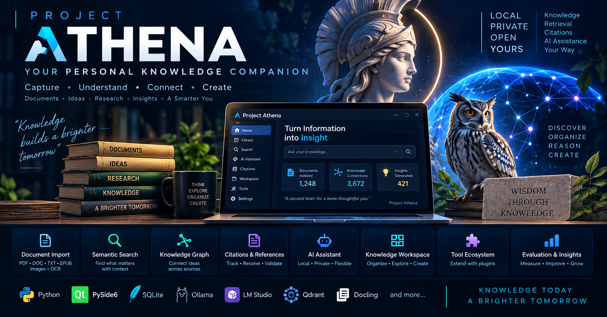

📄
Document Intelligence
Import, process and organize documents, text, images and OCR-derived content.
PROJECT ATHENA
A privacy-first, offline-first knowledge and AI workspace for turning documents, research and ideas into connected, searchable knowledge.

THE PRINCIPLE
Athena builds the knowledge layer first — then adds retrieval, citations, workspace intelligence and local AI assistance on top of it.
CAPABILITIES
Import, process and organize documents, text, images and OCR-derived content.
Find relevant knowledge through query planning, semantic retrieval, ranking and context assembly.
Keep source traceability at the heart of AI-assisted research.
Integrate local providers such as Ollama and LM Studio through provider-independent interfaces.
Move from simple search toward context-aware knowledge workflows and intelligent workspaces.
Local storage, local processing and explicit integration boundaries keep your knowledge under your control.
ARCHITECTURE
A service-oriented architecture keeps document intelligence, retrieval, citations, workspace services and AI providers modular and testable.
TECHNOLOGY
LONG-TERM VISION
Athena is an evolving engineering project exploring what becomes possible when personal knowledge management, retrieval, evidence and local AI are designed as one coherent system.